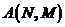
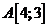
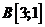
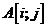
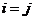
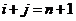
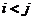
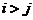
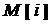
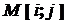

Двумерный (многомерный) массив в Паскале трактуется как одномерный массив, тип элементов которого также является массивом (массив массивов).
Двумерный массив - это набор однотипных данных, имеющий общее имя, доступ к элементам которого осуществляется по двум индексам.
Данные двумерного массива хранятся в прямоугольной таблице - матрице.
Двумерный массив определяется именем, числом строк и столбцов и обозначается:  , где А – имя массива; N – число строк, M – число столбцов. Если M=N, то матрица называется квадратной. В матрице каждый элемент определяется номером строки и номером столбца, на пере пересечении которых он расположен, и в соответствии с этим обозначается именем массива с двумя индексами: первый – номер строки, второй – номер столбца. Пример:   .
Если обозначить: i – номер строки, j – номер столбца, то элемент матрицы обозначается  .
Если матрица квадратная:
- Для элементов, принадлежащих главной диагонали  .
- Для элементов, принадлежащих вспомогательной диагонали  , где n – размерность квадратной матрицы.
- Для элементов, лежащих выше главной диагонали  .
- Для элементов, лежащих ниже главной диагонали  .
Формат записи:
<Имя>: array [1..N, 1..M] of <тип элементов>
Пример описания двумерного массива на языке программирования Pascal:
Type Str = array [1..10] of integere; Matrix=array [1..5] of Str; Var M: matrix;
Мы объявили двумерный массив Паскаля M, состоящий из 10 строк, в каждой из которых 5 столбцов. При этом к каждой i -й строке можно обращаться  , а каждому j -му элементу внутри i -й строки –  .
Var A: array[1..n,1..m] of integer; const n=4, m=3 Masiv=array [1..n, 1..m] of integer;
Для того чтобы использовать элемент массива, надо указать имя массива и индекс элемента. Первый индекс соответствует номеру строки, второй – номеру столбца - . Например:
Типовые алгоритмы обработки двумерных массивов
1. Поэлементный ввод массива:
for i:=1 to N do begin for j:=1 to M do readln (A[i, j]); end.
2. Вывод массива в виде таблицы:
for i:= 1 to n do begin for j:= 1 to m do write (a[i,j]:4); writeln; end;
3. Использование генератора случайных чисел для заполнения двумерного массива и вывода его на печать:
randomize; for i:=1 to m do begin for j:=1 to n do begin a[i,j]:=random(100)-10; write(a[i,j]:4); end; writeln; end;
4. Нахождение суммы значений элементов массива:
S:=0; for i:=1 to N do begin for j:=1 to M do S:= S + A[i, j]; end;
5. Нахождение суммы двумерных массивов:
begin for j:= 1 to m do c[i, j]:=a[i, j]+ b[i, j] end;
6. Транспонирование матрицы – зеркальное отражение ее элементов относительно главной диагонали. Сделать это можно, введя новый массив:
for i:= 1 to n do for j:= 1 to n do b[i, j]= a[j, i];
Пример .
Написать программу, которая для двумерного массива размерностью 3х4 определяет среднее арифметическое его элементов и количество положительных элементов в каждой строке.
program srednee; const m=3; n=4; var a: array[1..n,1..m] of integer; i,j,pol_elem:integer; sred:real; begin for i:=1 to n do for j:=1 to m do read(a[i,j]);{ввод элементов массива} sred:=0; for i:=1 to n do begin pol_elem:=0; {количество положительных элементов} for j:=1 to m do begin sred:=sred+a[i,j]; if a[i,j] > 0 then inc(pol_elem); {если элемент массива больше нуля, то увеличиваем количество на 1} end; writeln('В',i,'-ой строке',' ',pol_elem,' ','положительных элементов'); end; sred:=sred/n/m; writeln('Средннее арифметическое:',sred:6:2); end.
Инструкция